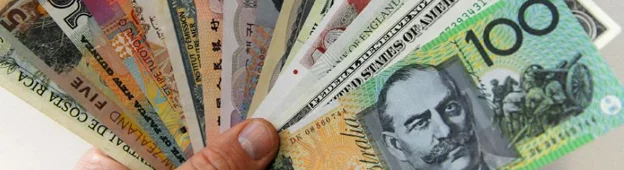
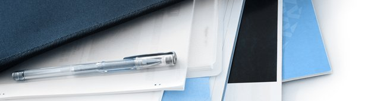

Documentos personales
Esta es la parte más sencilla, ya que suponemos que todo esto lo tienen al alcance de la mano:
- Foto del pasaporte: solamente de la página con los datos personales, no es necesario que sea certificada.
- Foto de la cédula de identidad: puede ser el D.N.I., y no es necesario que sea el nuevo, el que tiene la tapa celeste puede ser también.
- Foto reciente tamaño pasaporte de no más de 6 meses de antigüedad. El tamaño para la foto de pasaporte de Australia es de 3,5 cm (ancho) por 4,5 cm (alto), varía de país en país, pero si ya tienen sacadas no deberían tener problemas.
Aplicaciones para sacarse la foto desde el celular
Importante: En la aplicación online NO piden que se adjunte la partida de nacimiento (como sucedía cuando la aplicación era personalmente) pero hubo chicos a los que les solicitaron que las envíen por mail.
¿Cómo demostrar el nivel de inglés?
Pueden presentar evidencia del resultado de alguno de los siguientes exámenes de inglés:
IELTS
Deben obtener un promedio de al menos 4.5 entre los 4 componentes del examen. En este caso, deben presentar una fotocopia del resultado del examen, es decir, el certificado que demuestra que lo rindieron y muestra el resultado. No sirve una captura de pantalla del resultado, porque allí no aparecen todos los datos.
Este examen se puede rendir en sus dos formatos disponibles que son Academic y General Training.
TOEFL
Deben demostrar que obtuvieron un puntaje promedio de al menos 32, entre los 4 componentes del examen.
En el caso de este examen, pueden presentar una foto del certificado que demuestra que lo rindieron y con qué puntuación, o también una captura de pantalla en la que aparezcan todos los datos: nombre completo, fecha del examen, lugar, código.
PTE
El examen que se debe rendir es el PTE académico. Deben obtener un promedio de al menos 30 puntos entre los 4 componentes del examen.
CAE
Se debe obtener un promedio total de al menos 147 puntos entre los 4 componentes del examen.
Varios
- Demostrar que tienen un título o diploma que certifica que cursaron una carrera al menos dos años a tiempo completo y todo el cursado fue en inglés.
- Mostrar certificado de que asistieron a una escuela donde todos los años de estudios primarios y al menos 3 años de la secundaria, todas las clases fueron en inglés.
- Probar que asistieron a una escuela secundaria al menos 5 años donde toda la instrucción fue en inglés.
- Demostrar que asistieron a una institución en Australia donde todo el curso fue en inglés por al menos un año a tiempo completo.
Vigencia de la documentación
La documentación que usen para acreditar su nivel de inglés, debe tener menos de 12 meses de antigüedad. Es decir, no deben haber pasado más de 12 meses desde que rindieron el examen que avala su nivel.
¿Hace falta certificar esta documentación?
No hace falta certificar nada, solamente necesitan mostrar una copia del certificado que tiene el resultado y sus datos.
Evidencia de fondos suficientes

Presentar una comprobante que demuestre el dinero disponible en su cuenta bancaria donde se vea que tienen fondos apropiados, equivalentes a AUD 5.000 (USD 3,564) como mínimo, con fondos adicionales para cubrir su pasaje aéreo.
El comprobante de los fondos debe estar sellado y/o firmado por su entidad bancaria, de todas maneras sabemos de chicos que han presentado la documentación sin firmar y se la aceptaron igual.
IMPORTANTE: En cuanto a la demostración de fondos en pesos argentinos, esta se calcula teniendo en cuenta el tipo de cambio oficial y sin sumar ningún impuesto extra. Es decir, sin sumar el 30% del impuesto PAÍS ni el 35% de recargo que aplica la AFIP. Si quieren saber cuál es el cambio oficial actualizado pueden hacerlo en la web de Oanda.
¿Cuánto tengo que demostrar si NO tengo comprados los pasajes?
Será necesario que tengan al menos AUD 1200 más (USD 855), es decir, AUD 6200 (USD 4,420) en total.
Estos AUD 1200 (USD 855) extras, corresponden a los fondos necesarios para comprar el pasaje de vuelta.
El pasaje de ida no lo piden, porque obviamente si quieren irse van a tener que comprarlo!
Para hacer la conversión a ARS (pesos argentinos) o USD (dólares estadounidenses), la embajada usa la web OANDA.
¿Cómo puedo demostrar los fondos?
Tienen tres formas de demostrar el dinero:
Fondos propios
Como se mencionó más arriba, necesitan una copia firmada y/o sellada por el banco de su cuenta bancaria donde se vean los fondos de los que disponen.
NOTA: sabemos que en muchos bancos se niegan a sellar o firmar el resumen de cuenta, y ante esto muchos chicos han logrado que en el banco les hagan una nota y la firmen, en la cual se detalla cuánto dinero disponen en su cuenta. Asimismo, otras personas presentaron comprobantes sin firmar e igual se los aceptaron, aunque no lo recomendamos.
Fondos no propios
Para poder utilizarlos en su demostración van a tener que incluir una copia de la cédula de identidad de la persona que los está proporcionando (su padre, un amigo, etc.) y una carta en que indique que la persona estará brindándoles apoyo financiero durante su estadía en Australia.
IMPORTANTE: Con respecto a esto, vale aclarar algo: se puede acreditar los fondos con una o más de una cuenta, de dos o más titulares distintos. Y la cuenta bancaria puede ser de distintos tipos: corriente, plazo fijo, etc. Para certificar estas cuentas el titular debe ir y pedir al banco que le firme el papel donde está el detalle de sus fondos.
Tarjeta de crédito
Esto no lo recomendamos, pero si no les queda otra haganlo. Básicamente que les acepten o no esta forma de acreditar el dinero va a depender del oficial que reciba su documentación.
Pero si quieren probar de esta forma, pueden hacerlo con el límite que tienen en su tarjeta de crédito. Además tienen que tener en cuenta que si presentan el resumen de la tarjeta de crédito, deben contar con un adicional a dicha tarjeta.
Desde la embajada nos confirman que es válido presentar el resumen de cuenta o el resumen de su tarjeta de crédito impreso desde homebanking o si el banco se los envía por mail, o si lo van a buscar de manera personal. Lo que tienen que tener en cuenta es que no serán tomados como válidos los prints de pantalla desde el homebanking.
Certificado de Estudios
Para este punto, los requisitos dicen lo siguiente: haber completado exitosamente 2 años de estudios universitarios, o un terciario“.
El Certificado de estudios (título)
Si ya se recibieron, tanto de un estudio terciario como un universitario, deben presentar su título académico reconocido por el Gobierno de Argentina. Se deberá presentar una copia certificada por la entidad educativa o por escribano público.
Muchas personas presentan su analítico ya firmado por ejemplo por el secretario académico, y eso ya vale como certificación. Asegúrense siempre que este firmado por alguna autoridad.
Si están recibidos, y no tienen el título, porque está en trámite, pueden presentar un certificado de título en trámite. Conocemos personas que en 2019 se lo han aceptado. De todas formas si además de esto, consiguen el analítico, mejor todavía.
Evidencia de que han completado 2 años de estudios universitarios
Si no se recibieron, y no tienen el título, pero tienen al menos 2 años cursados y aprobados de estudios universitarios, son elegibles para aplicar a la visa. Esto significa que tienen que tener aprobado y rendido como mínimo los 2 primeros años de lo que hayan estudiado. Para estos casos pueden presentar el certificado analítico, que les va a servir como comprobante para este requisito.
Ejemplo: En la UBA a veces tienen 6 materias en el CBC y 6 el primer año, entonces con 12 alcanza. Pero en la UADE cada año tiene 10 materias, con lo cual tienen que tener 20 en total. Si necesitan 20, por ejemplo, y tienen 10 del 1er año, 7 del 2do y 3 del tercero, está bien. Pero si en total tienen 18, no sirve. Son muy estrictos con el requisito de estudios. Si en su facultad 2 años son 20 materias, y tienen 19, no completaron 2 años! No importa si a un amigo de la UBA solamente con 14 materias le dieron la visa. Depende de cada facultad!
CBC Estudiantes de la UBA (Universidad de Buenos Aires): los que hayan estudiado o estén estudiando en la UBA y hayan hecho el CBC, quédense tranquilos que ese año si cuenta como parte de los 2 años de universidad!
Evidencia de que han aprobado y terminado estudios terciarios
Significa que deben haber terminado satisfactoriamente una tecnicatura o profesorado. Esto implica, obviamente, haber rendido todas las materias.
Como documentación, pueden presentar el analítico y el título. Si se quieren quedar más tranquilos, lo hacen firmar, sellar, y con eso ya es suficiente. Pero recuerden que es requisito que esté terminado, y si tienen tesis, deben haber presentado la tesis, sino no les va a servir.
¿Cómo saber si lo que estudiaron es una carrera terciaria?
Según el Ministerio de Educación, éste tiene que tener como requisito obligatorio de ingreso haber terminado el secundario y haber tenido una cursada de 1600 horas o más. Todos los profesorados y tecnicaturas son terciarios.
Ejemplos que por lo general NO aplican: los cursos de cocina, guardavidas, profesor de tenis, los de formación profesional, de actor, fotógrafo, suelen no cumplir con 1600 hs de cursada.
NOTA: conocemos el caso de una persona que aplicó con estudio terciario incompleto (Tecnicatura en Diseño Gráfico). El presentó su analítico de 4 años cursados y aprobados, pero sin el título por no haber rendido la tesis y le aprobaron la visa. Es decir, sus años cursados de tecnicatura le sirvieron aunque esté incompleta.
ACLARACIÓN: Es válido presentar los documentos escaneados. Para hacerlo, pueden utilizar alguna de las apps que cumplan esa función, como por ejemplo CamScanner.
Seguro de Viajes
Si bien al momento de aplicar a esta visa no es necesario presentar un seguro, es 100% recomendado irse con un Seguro de viajes a Australia, ya que cualquier problema que tengan les puede llegar a costar muy caro.
Ya que nadie quiere gastarse todos sus ahorros por enfermarse, mejor siempre ser precavidos, y siempre que viajen, adonde sea, les recomendamos viajar asegurados!
Vigencia de la documentación a presentar

Exámenes de inglés
Deben haber rendido el examen hace no más de 12 meses, al momento de presentar la documentación.
No importa cuánto demoren en aprobarles la visa, y si el certificado vence en esos días, lo importante es al día de presentarlo no tenga más de 12 meses.
¿Qué hacer si mi examen ya tiene un poquito más de 12 meses?
Lo que sugerimos según lo que nos dijeron de la embajada es que si tienen un examen recientemente vencido (menos de 1 mes), y les fue bien, arriba de 7 u 8, que lo presenten pidiendo una excepción. Si llegado el momento la embajada no puede exceptuar más esto, o evalúan que el nivel obtenido no les permite hacer excepción, les van a pedir que rindan el examen y lo vuelvan a presentar.
Certificado de estudios
No tiene vencimiento.